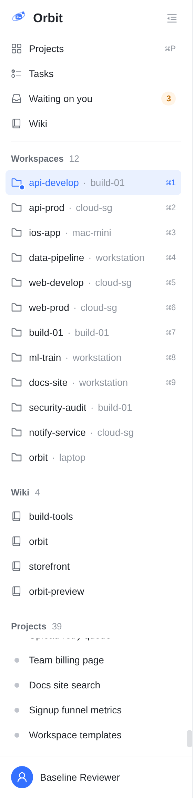
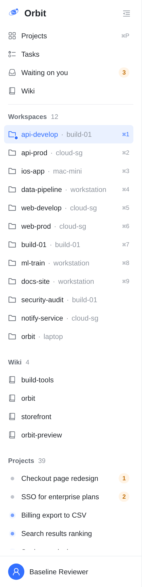
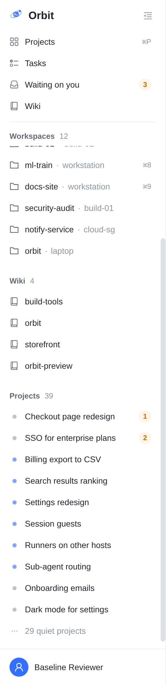
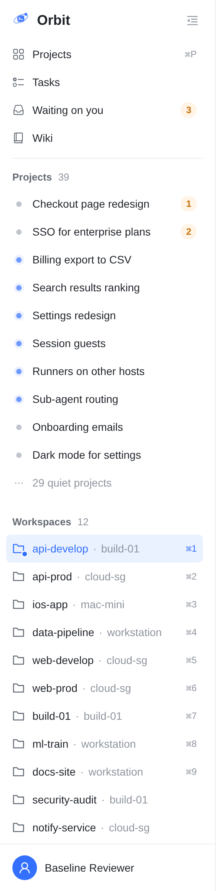
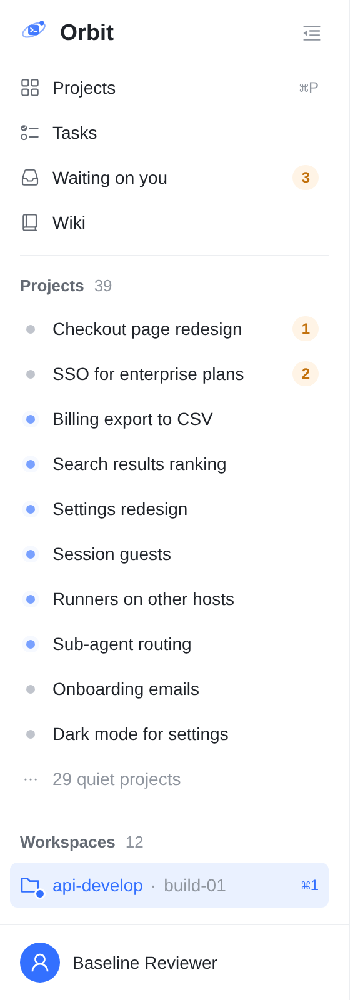

真实 Web 控制台截图（静态构建加假数据：main 4e70a8613），窗口 1440×1150，按你 11-12 截图的样子还原：12 个 Workspace、4 个 Wiki、39 个打开的项目（2 个等你、6 个在跑、2 个今天动过、29 个好几天没动）。名字是示例，红色虚线和数字是标注。

同样的数据、同样 1150 高（最后一张是 13 寸笔记本的 800 高）。A 是代码原型（prototype-3.patch，约 30 行）；B 和 C 是在原型上叠的几行 CSS，只为截图。




11-12 已定拍板 1 选 A1（「最近」= 24 小时）；拍板 2 选 B：Workspaces 留在上面，整栏一个滚动条，组头吸顶。已按此在 Web 实现。
等你的、在跑的、24 小时内动过的。项目一安静下来，就自己退进「N quiet projects」。
列表短（这里 10 个），蓝点和琥珀色数字一眼看全
要找一个安静的项目得多点一下（或者 ⌘P）
一个不少
39 个里大多是灰点；只要项目一直打开着，列表就越来越长
「最近」取多长：24 小时（原型）还是 3 天？
刚打开就看到所有要盯的项目；不再有框里套框
去掉「放不放得下」的测量代码，规则更简单
Workspaces 下移；iPhone / Android 抽屉也要照着改，三端顺序才一致
顺序不变，没有小框
刚打开时 Projects 照样只露 4 行，要滚才看得到
配 A1 也只是「4 行里滚 10 个」
prototype-3.patch 加测试。.pin-workspaces 规则），加上组头吸顶。